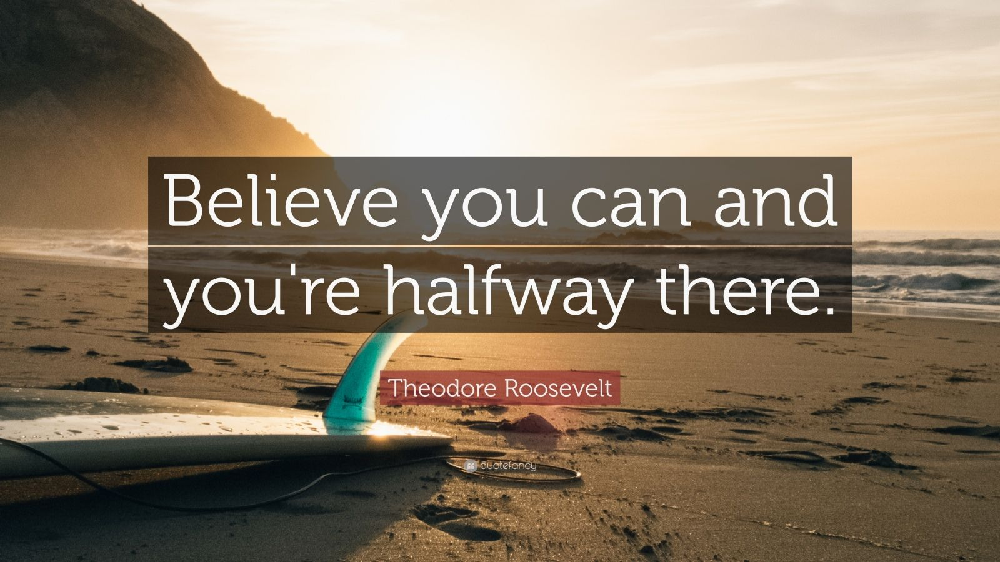
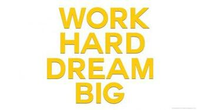

"Hard work and perseverance. It's a small price to pay to change your life." 1. Remove the wrong things. –
When things don't add to your life, it's time to start removing. Sometimes you have to leave things to move forward.
You can't discover new oceans unless you create enough courage to overlook the old and familiar coastline. Be brave. Follow your values. Make changes.
Believe that YOU CAN.
The biggest obstacle that prevents people from achieving their dreams is the feeling that they are not good enough.
Don't be afraid of the space between your dreams and reality. Are you good enough?! Don't let life discourage you. Success is closer than it
seems. With enough determination everything is possible. Everyone who got to where he is had to start where he was, just like you.

Work hard for what you want most.
Dreams do not magically become a reality. It takes determination, sweat and hard work.
Remember, difficult situations do not last for long. It's the tough people who do it. Most obstacles disappear when we make
our minds walk through them. If you have a strong commitment to your goals and dreams and wake up every morning with a passion
to walk towards them, anything is possible

Support yourself.
You cannot force people to show you respect, but you can refuse not to be respected.
If you always back down to keep the peace, you will always be armed with anger and self-loathing, and you will
fight an inner enemy. Say what you have to say, do what you have to do and don't let any bully set you up in the corner.
Leave the past.
– Don't stumble on something that is behind you. Don't let your shadow guide you. You are not a slave of your past.
Let it go and move forward. Dream and give yourself permission to envision what you choose to be – that you know you can become